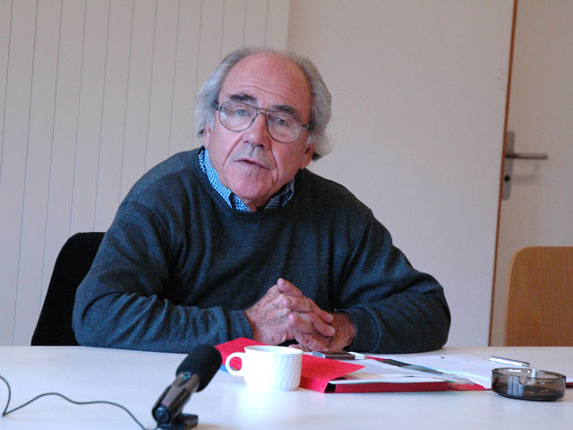

PART 5. 기호·기록·코드 · 11주차 상징성
가짜가 진짜를 흉내 내는 것이 아니라
진짜가 없어서 가짜만 남는 것
장 보드리야르 — 시뮬라크르
00이 주차의 위상
오늘 2주차 플라톤이 돌아옴. 에이콘과 판타스마타가 시뮬라크르가 됨. 학기 전반부가 여기서 한 바퀴 돎.
여는 질문
- AI로 만든 사람 얼굴이 있음. 이 사람은 실제로 존재하지 않음.
- 이것은 가짜인가. 가짜라면 무엇의 가짜인가.
- 흉내 낼 원본이 없는데 닮았다고 말할 수 있는가.
- 그런데 우리는 그 얼굴을 보고 사람이라고 지각함.
위치 확인 — 아도르노와 어디가 다른가
- 아도르노 6주 — 진짜(비동일자)가 억압됐음.
- 보드리야르 — 진짜가 아예 없음.
01오늘 만날 개념
- 시뮬라크르simulacre
- 원본을 흉내 낸 것 — 인데, 보드리야르에게는 원본이 없는 복제임.
- 시뮬라시옹simulation
- 시뮬라크르를 만들어내는 작용·과정임.
- 하이퍼리얼리티hyper-reality · 초실재
- 실재보다 더 실재 같은 가상임.
- 에이콘Eikon · 형상
- 플라톤 용어. 이데아의 본질적 특성을 보존한 복제품이자 현실임.
- 판타스마타Phantasmata · 환영
- 실재와의 관계가 모호한 2차 복제임. 곧 시뮬라크르의 조상.
- 성상파괴iconoclasm
- 성상(이콘)을 부수는 운동임. 8~9세기 비잔틴에서 실제로 벌어짐
- 저지기계machine de dissuasion
- 보드리야르의 조어. 실재의 부재를 은폐하기 위해 가짜를 전면에 내세우는 장치임.
- 기호가치sign value
- 상품의 쓸모(사용가치)나 노동량(교환가치)이 아니라, 그것이 나타내는 사회적 의미임.
- GAN적대적 생성 신경망
- 생성자와 판별자가 서로 겨루며 학습하는 생성 모델임.
02원본과 복제의 역전

en:User:Europeangraduateschool · CC BY-SA 2.5 · Wikimedia Commons
전통적 관점
미메시스 — 실재의 모방- 이미지의 품질은 실재와 닮은 정도로 평가됨
- 이미지는 실재에서 파생되는 부차적 산물임
보드리야르의 관점
시뮬라시옹- 실재를 변질시키거나 감추는 방식으로 이미지를 생산함
- 복제 이미지가 실재보다 더 강력한 힘을 발휘함
- 원본과 복제의 위상이 뒤집힘
4~5주차 벤야민과의 결정적 차이
- 벤야민 — 원본이 있고, 복제가 아우라를 없앰 → 상실의 이야기임.
- 보드리야르 — 원본이 없음 → 상실할 것조차 없다는 이야기임.
- 심혜련의 3단계로 정리하면 — 복제(벤야민) → 변형 → 생성(보드리야르의 자리). 4~5주차에서 예고한 지점이 오늘 도착함.
03플라톤의 귀환
이데아론과 동굴 비유
- 인간 세계는 이데아를 모방한 가상임.
- 예술은 가상을 복제한 2차 가상임 → 추방해야 함.
- 순서는 이데아 → 현실 → 가상임.
이데아
본질
→
에이콘
본질을 보존한 복제
= 현실
= 현실
→
판타스마타
관계가 모호한 2차 복제
= 시뮬라크르
= 시뮬라크르
에이콘과 판타스마타를 쉽게 구별하는 법
- 침대를 설계도대로 만든 목수의 침대 = 에이콘. 이데아를 담고 있음.
- 그 침대를 비스듬히 그린 화가의 그림 = 판타스마타. 한 각도에서만 그럴듯함.
- 플라톤은 화가를 쫓아내려 했음. "보이는 대로 그린 것은 있는 것이 아니다."
2,400년의 원환
- 2주차 — 플라톤은 문자를 추방하려 했음. 기억의 가상.
- 오늘 — 플라톤은 판타스마타를 추방하려 했음. 실재의 가상.
- 같은 몸짓임. 플라톤은 늘 매개된 것을 의심함.
- 그리고 보드리야르는 이렇게 답함 — "추방할 원본이 애초에 없음." 플라톤의 이데아 자체가 하나의 시뮬라크르였다면 어떻게 되는가.
〈매트릭스〉 일화 — 이 하나로 개념이 정확히 전달됨
- 〈매트릭스〉(1999)에는 실제로 『시뮬라크르와 시뮬라시옹』 책이 소품으로 나옴. 감독이 배우들에게 읽게 했음.
- 그런데 보드리야르 본인은 "영화가 내 이론을 오해했다"고 함.
- 왜인가 — 영화는 매트릭스 바깥에 진짜 현실(시온)이 있다고 설정함.
- 보드리야르에게는 바깥이 없음. 빨간 약을 먹어도 나올 곳이 없음.
04시뮬라크르의 4단계
오늘의 핵심 도구임.
1단계 — 실재의 반영있는 그대로 재현
전통 — 초상화, 다큐멘터리 사진 / 지금 — 무보정 사진
2단계 — 실재의 변형감추고 변질시킴
전통 — 미화된 초상화, 수정된 보도사진 / 지금 — 보정, 필터
3단계 — 실재의 은폐관련 없음을 숨김
전통 — 광고 속 '자연스러운 일상' / 지금 — 연출된 브이로그, "협찬 아님" 표시
4단계 — 순수 시뮬라크르원본 없는 복제
전통 — 없음 / 지금 — 생성 이미지, 딥페이크, 버추얼 인플루언서
가장 헷갈리는 지점 — 2·3·4단계의 차이
- 2단계 — 원본이 있는데 바꿨음. 원본이 있음을 앎.
- 3단계 — 원본이 없는데 있는 척함. 없음을 숨김.
- 4단계 — 원본이 없고 숨길 필요도 없음. 아무도 원본을 찾지 않음.
하나의 사례로 네 단계 통과하기 — 아이돌 사진
- 공연장에서 팬이 찍은 사진 → 1단계
- 소속사가 보정한 공식 사진 → 2단계
- "자연스러운 일상"으로 연출된 셀카 → 3단계
- AI로 만든 버추얼 아이돌 → 4단계
- → 같은 장르 안에서 네 단계가 동시에 존재함. 이것이 지금의 조건임.
스스로 물어볼 것 — 딥페이크는 몇 단계인가
- 실존 인물의 얼굴을 씀 → 원본이 있음 → 2단계?
- 그 사람이 하지 않은 말을 하게 함 → 실재와 무관 → 3단계?
- 그런데 그 영상 자체는 아무것도 복제하지 않았음 → 4단계?
- 답이 갈리는 것이 정상임. 갈리는 이유를 설명하는 것이 답임.
05하이퍼리얼리티
- 시뮬라크르가 지배하는 세계임.
- 실재보다 더 실재 같은 가상임.
- 실재의 소멸이 따라옴. 사례는 리얼리티쇼와 광고임.
"리얼리티쇼"라는 말 자체가 증거임
왜 현실에 '쇼'를 붙여야 하는가. 현실이 그 자체로는 충분히 현실적이지 않기 때문임.
하이퍼리얼의 일상 사례
- 여행지에 갔더니 사진보다 실망스러웠음. 무엇이 원본인가.
- 음식 사진이 실물보다 맛있어 보임. 그런데 사진에 맞춰 실물을 바꿈.
- "날 것 그대로"를 강조하는 콘텐츠일수록 편집이 정교함.
06저지기계
실재의 가상성
- 실재로 믿었던 것의 허구성이 폭로됨. 실재의 조작 가능성.
- 실재의 가상성을 은폐하기 위해 하이퍼리얼리티를 만들어냄.
- 모든 세상은 환상에 불과함 → 허무주의.
성상파괴 운동을 어떻게 읽는가
- 성상을 부수는 사람들은 "이 그림은 신이 아니다"라고 말함.
- 그런데 그렇게 말함으로써 "그림 너머에 진짜 신이 있다"는 것을 확인함.
- 보드리야르 — 그들이 진짜로 두려워한 것은 그림 너머에 아무것도 없다는 것이었음.
Patrick Pelletier · CC BY-SA 4.0 · Wikimedia Commons
| 사례 | 표면 | 실제 기능 |
|---|---|---|
| 디즈니랜드 | 시뮬라크르의 완벽한 모델 | 미국 자체가 환상의 디즈니랜드라는 점을 은폐함 |
| 워터게이트 | 추악한 정치적 스캔들 | 정치 자체가 스캔들이라는 점을 은폐함. 최고 권력자를 탄핵함으로써 "민주주의는 작동한다"는 믿음을 주입함 |
저지기계의 구조 — 정확히 이해할 것
- 실재가 실제로 등장하는 돌발사태를 저지함. 실재의 허구를 미리 역으로 재생함.
- "여기가 가짜다"라고 표시된 구역을 만들면 → "저기는 진짜다"라는 믿음이 생김.
- 가짜를 지정하는 것이 진짜를 보증하는 방법임.
- 그리고 보드리야르 — 진짜는 없음. 가짜 구역이 바로 그 부재를 감추는 장치임.
스스로 물어볼 것 — 이것들은 저지기계인가
- "광고"라는 표시 — 나머지 콘텐츠는 광고가 아니라는 믿음을 만드는가.
- "AI 생성" 워터마크 — 워터마크 없는 것은 사람이 만들었다는 믿음을 만드는가.
- 공인의 사과 기자회견 — 산업 구조는 묻지 않게 하는가.
- 표절 검사 프로그램 — 검사를 통과하면 정직한 글이라는 믿음을 만드는가.
오늘의 어려운 물음 — AI 윤리 담론은 저지기계인가
- 디즈니랜드가 미국 전체가 환상임을 은폐하듯, "AI 윤리", "책임 있는 AI", "AI 안전" 담론이 은폐하는 것은 무엇인가.
- 가능한 답 — "여기가 위험 구역"이라고 표시함으로써 나머지는 안전하다는 믿음을 만듦. 가이드라인의 존재가 문제가 관리되고 있다는 인상을 줌. 개별 편향 사례를 다룸으로써 구조 자체는 묻지 않게 함.
- 반론도 함께 생각할 것 — 그렇다면 윤리 논의를 그만두자는 것인가. 보드리야르의 허무주의는 어디로 가는가.
07기호 중심의 소비사회
노동가치
생산
→
사용가치
소비
→
기호가치
과시소비
- 자신의 포장을 위한 소비임. 상품 자체보다 상품에 덧칠된 의미를 구매함.
- 기호로 타인과 구별함 — 특정 상품을 소비하며 사회적 지위와 경제력을 드러냄. 집단 소속감과 구분을 위해 기호를 소비함.
- 미디어가 기호소비를 촉진함 — 광고를 통해 특정 상품의 의미를 전달함.
인간의 소외
- 존재 가치가 소유한 상품의 기호로 드러남.
- 기호 질서 속에서 내면 성찰이 부족해짐.
- 자아의식과 개성이 상실됨.
지금 적용 — 기호가 된 것들
- 프로필 사진, 피드의 미감, 사용하는 앱.
- "나는 ○○ AI를 쓴다"가 정체성 표시가 되는 순간, 그것은 기호 소비임.
- 노트북 뚜껑의 로고, 텀블러 브랜드, 읽고 있는 책의 표지.
- → 6주차 아도르노의 유사개인화와 겹침. 다만 아도르노는 자본을, 보드리야르는 기호 체계 자체를 지목함.
08혼종화와 디지털 페르소나
심혜련(2024) I부 3장 「매체 공간의 혼종화」 pp.93~122 + I부 4장 4절 「디지털 헤테로토피아에서의 디지털 페르소나」 pp.142~148.
- I부 3장 — 물리적 공간과 매체 공간이 뒤섞이는 방식임. 실재/가상 이분법의 대안임.
- I부 4장 4절 — 디지털 공간에서 만들어지는 또 다른 나임.
'헤테로토피아'란 — 푸코의 개념
현실 속에 있으면서 현실과 다른 규칙이 작동하는 공간임. 극장, 정원, 묘지, 놀이공원. 가짜가 아니라 다른 규칙의 현실임. 심혜련은 디지털 공간을 그렇게 봄.
보드리야르
실재의 소멸- 강점 — 구조를 폭로함. 저지기계 같은 날카로운 도구를 줌
- 약점 — 그래서 무엇을 할 것인가에 답하지 않음. 허무주의로 끝남
심혜련
혼종화- 강점 — 실천 가능한 서술을 줌. 실재와 가상이 뒤섞인 새로운 조건
- 약점 — 비판의 날이 무뎌질 수 있음
스스로 물어볼 것
버추얼 인플루언서는 시뮬라크르인가, 디지털 페르소나인가. 어느 개념이 이 현상을 더 잘 설명하는가. 무엇이 달라지는가.
09GAN과 적대적 학습
변정수(2025) 4부 9장 「GAN 알고리즘과 이드·자아·초자아」.
생성자
가짜 데이터를 만듦
판별자를 속이도록 학습
판별자를 속이도록 학습
⇄
적대적 학습
둘이 서로를
훈련시킴
훈련시킴
⇄
판별자
진짜/가짜를 판정
속지 않도록 학습
속지 않도록 학습
비유 — 위조범과 감정사
위조범이 그림을 만듦. 감정사가 가짜를 골라냄. 위조범은 더 잘 만들고, 감정사는 더 잘 골라냄. 둘이 서로를 훈련시킴. 결국 감정사도 못 알아보는 그림이 나옴. 그런데 그 그림은 어떤 원작의 위조도 아님.
프로이트 삼항과의 유비
| GAN | 프로이트 |
|---|---|
| 생성자 — 무엇이든 만들어냄 | 이드 — 충동, 검열 없음 |
| 판별자 — 통과 여부를 심판함 | 초자아 — 내면화된 금지 |
| 균형점의 출력 | 자아 — 둘 사이에서 조정된 결과 |
보드리야르와의 연결 (1) — 원본 없는 복제의 기계화
- GAN에는 베껴야 할 특정 원본이 없음.
- 학습 분포를 닮되 그중 어느 것도 아닌 것을 만듦.
- → 4단계 시뮬라크르의 정확한 기계적 구현임.
보드리야르와의 연결 (2) — 유비는 어디서 깨지는가
- 프로이트의 초자아는 사회적 규범을 내면화한 것임.
- GAN의 판별자는 데이터 분포를 학습한 것임.
- 규범과 분포는 같은 것인가.
- → "많이 있는 것"이 "옳은 것"이 되는 구조임.
- → 6주차 아도르노의 동일성 원칙과 직결됨. 다수 분포가 규범이 되면 비동일자는 '가짜'로 판정됨.
확장 물음
- 현행 거대언어모델의 정렬(alignment)은 이 구조의 확장인가.
- 생성 → 검열 → 정렬이 GAN의 삼항과 같은 구조인가.
- 그렇다면 '정렬된 모델'의 출력은 자아인가. 그리고 누구의 초자아를 내면화한 것인가.
10정리 · 흔한 오해 · 토론
이번 주 개념 다섯
- 시뮬라크르 / 시뮬라시옹 원본 없는 복제와, 그것을 만들어내는 작용.
- 4단계 반영 → 변형 → 은폐 → 원본 없는 복제.
- 하이퍼리얼리티 실재보다 더 실재 같은 가상. 실재의 소멸.
- 저지기계 가짜 구역을 지정해 나머지가 진짜라고 믿게 만드는 장치임.
- 기호가치 상품의 쓸모가 아니라 그것이 나타내는 사회적 의미.
흔한 오해 셋
오해 1 — "시뮬라크르 = 가짜"
- 교정 — 시뮬라크르는 가짜가 아님. 가짜는 진짜를 전제함.
- 시뮬라크르는 진짜가 없는 상태임. 이 구별을 놓치면 오늘 내용 전체가 무너짐.
오해 2 — "하이퍼리얼리티 = 진짜 같은 가짜"
- 교정 — 정확히는 "진짜보다 더 진짜 같은 것"임.
- 그래서 진짜가 오히려 초라해짐.
오해 3 — "보드리야르는 매트릭스처럼 진실을 깨우라고 했다"
- 교정 — 보드리야르는 영화가 자기 이론을 오해했다고 함.
- 매트릭스에는 바깥(시온)이 있지만, 보드리야르에게는 바깥이 없음.
토론 질문
- 딥페이크는 시뮬라크르 4단계 중 어디인가.
그리고 생성자/판별자의 적대적 학습은 "원본 없는 복제의 기계화"인가. - AI 윤리 담론은 저지기계인가.
디즈니랜드가 미국 전체가 환상임을 은폐하듯, "AI 윤리"가 은폐하는 것은 무엇인가. 그리고 이 물음에 대한 반론은 무엇인가. - 버추얼 인플루언서는 시뮬라크르인가, 디지털 페르소나인가.
어느 개념이 이 현상을 더 잘 설명하는가. - 프로이트 삼항과 생성-검열-정렬의 유비는 어디서 깨지는가.
특히 초자아는 규범이고 판별자는 분포임. 이 차이는 결정적인가. - 실재의 소멸인가 혼종화인가.
각 진단이 우리에게 허락하는 행동은 무엇인가. - 우리는 지금 무엇을 근거로 "이건 가짜다"라고 말하는가.
팩트체크·워터마크·출처표시는 무엇을 전제하는 실천인가.
11참고자료
이번 주 읽기
- B 심혜련 (2012). 『20세기의 매체철학』 — 2부 2장
- C 심혜련 (2024). 『21세기의 매체철학』 — I부 3장 pp.93~122 / I부 4장 4절 pp.142~148
- D 변정수 (2025). 『알고리즘으로 철학하기』 — 4부 9장
원전
- 장 보드리야르. 『시뮬라크르와 시뮬라시옹』 — 1장 「시뮬라크르의 자전」과 디즈니랜드 대목만. 짧고 강렬함
- 장 보드리야르. 『소비의 사회』 — 기호가치 대목
- 미셸 푸코. 「다른 공간들」 헤테로토피아. 짧은 강연문
영상
- 영화 〈매트릭스〉(1999) — 소품으로 등장하는 『시뮬라크르와 시뮬라시옹』
- 영화 〈트루먼쇼〉(1998)
이어지는 주차
- 12주차 — 프리드리히 키틀러: 기록체계 상징성 · 물질성
보드리야르가 기호를 말했다면, 키틀러는 그 기호를 기록하는 하드웨어를 말함.